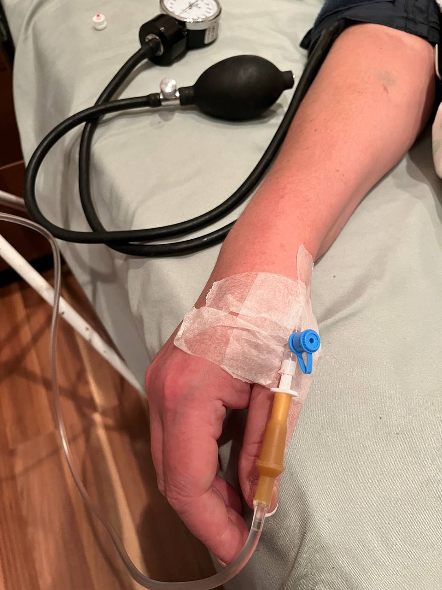

+380(97) 369 76
65
+380(97) 369 76
65Лечение алкоголизма Запорожье
Эффективное лечение алкоголизма в Запорожье
Работаем в Одессе, Киеве, Львове, Харькове, Днепре, Запорожье, Черноморске


Бесплатная консультация, работаем круглосуточно 24/7
Эффективное лечение алкоголизма в Запорожье
Работаем в Одессе, Киеве, Львове, Харькове, Днепре, Запорожье, Черноморске
Алкоголизм - это постоянно прогрессирующее хроническое наркологическое заболевание которое трудно поддается лечению без должной мотивации и настроя зависимого. Алкоголизм это заболевание которое требует комплексной , индивидуальной высококвалифицированной медицинской помощи для достижения качественной и длительной ремиссии. Врач который лечит алкоголизм называется нарколог. Лечением алкогольной зависимости занимаются не только наркологи но и врачи разных терапевтических специальностей для снятия острой или хронической алкогольной интоксикации с последующей нормализацией всех органов и систем человека. Лечением алкоголизма в Запорожье занимается медицинская служба UmbrellaPlus “Безопасная наркология”. Цель в лечении алкогольной зависимости это создать у пациент стойкое субъективное ощущение отвращения к любым спиртным напиткам на психологическом и физическом уровне.
Алкоголизм - это тяжело хроническое заболевание которое характеризуется психологической и физической зависимостью ( патологическим влечением) а так же полной или частичной потерей собственного контроля во время употребления спиртного. Одним из первых симптомов из за которого можно заподозрить у человека алкогольную зависимость это - рост толерантности к спиртным напиткам. Толерантность проявляется в том что человек сильно увеличивает дозу приема спиртных напитков для достижения прежней эйфории и удовольствия. Алкогольная зависимость всегда в конечном итоге приводит к серьезных последствия в социальном и физическом состоянии. Появляются хронические заболевания печени , сердечно-сосудистой системы ,желудочно-кишечного тракта. Социальная жизнь и межличностные отношения уходят на второй план.
Алкоголизм имеет характерные признаки:
Алкогольная зависимость делиться на три стадии:
1.Первая стадия алкоголизма - рост объема и частоты употребления спиртных напитков. Злоупотребление спиртным перерастает в психологическую зависимость.
2.На второй стадии проявляется физическая зависимость от спиртных напитков . Формируется четкий абстинентный синдром.
3. на третьей стадии проявляется серьезная деградация личности. Употребление становится ежедневным и постоянным.
Что бы вылечить алкоголизм вам нужно обратиться к врачу наркологу. В городе Запорожье вы можете обратиться в наркологический центр UmbrellaPlus “Безопасная наркология” для консультации и прохождения лечения от алкогольной зависимости. Лечение алкоголизма это длительный курс психотерапевтического и медикаментозного лечения до полного отказа пациента от любого употребления спиртного. Целью лечения алкогольной зависимости является формирование у пациент стойкого субъективного отвращения к спиртным напиткам. Лечением алкогольной зависимости занимаются только высококвалифицированные врачи которые помогают приобрести пациенту пожизненную трезвость и полную свободу от пагубной привычки.
Лечение алкоголизма в Запорожье начинается от 1499грн.
| Услуга | Цена |
|---|---|
| Лечение алкоголизма Запорожье | От 1499 грн |
| Вывод из запоя Запорожье | От 1499 грн |
| Вывод из запоя на дому Запорожье | От 1699 грн |
| Капельница от алкоголя Запорожье | От 1499 грн |
| Капельница от алкоголя на дому Запорожье | От 1699 грн |
| Лечение пивного алкоголизма Запорожье | От 1499 грн |
| Лечение женского алкоголизма Запорожье | От 1499 грн |
| Кодирование от алкоголизма Запорожье | От 3999 грн |
| Кодирование уколом Запорожье | От 3999 грн |
| Кодирование от алкоголизма уколом Дисульфирам | От 3999 грн |
| Кодирование от алкоголизма уколом Эспераль | От 5500 грн |
| Подшивка от алкоголя Запорожье | От 9999 грн |
| Кодирование по методу Довженко Запорожье | От 14999 грн |
Лечением алкозависимых пациентов в городе Запорожье занимаются врачи нашей наркологической службы UmbrellaPlus “Безопасная наркология”. Лечение алкоголизма подбирается индивидуально и с помощью комбинированной медикаментозной помощи удается снять патологическое влечение и “тягу” к спиртным напиткам на любой стадии алкогольной зависимости. Основным этапом перед работой с ложными убеждениями и патологических психологическим влечением к алкоголю является капельница от алкогольной интоксикации с последующим кодированием от алкогольной зависимости. Такой подход позволяет создать стойкое отвращение к спиртным напиткам на психологическом уровне тем самым позволит выйти пациенту из состояния постоянного употребления спиртного.
Лечение алкоголизма – это подход комплексной терапии , который включает медикаментозные, психологические и социальные критерии.
Медикаментозное лечение алкогольной зависимости начинается с детоксикации организма.
Дезинтоксикация или капельница от алкоголя : Препараты для очистки организма очень важны для нормализации состояния зависимого. Мы используем - рингер или реосорбилакт , витамины группы Б1Б6Б12 и С, кардио и гепатопротекторы а так же антиоксиданты и антигипоксанты.
Кодирование от алкогольной зависимости для достижения долгосрочной трезвости и понижения тяги к спиртным напиткам. Кодирование от алкоголизма проходит по трем разным сценариям: кодирование от алкоголизма с помощью укола , кодирование от алкоголизма подшивкой , кодирование от алкоголизма по методу Довжнко.
Реабилитационные программы:
Многие пациенты имеющие зависимость успешно проходят реабилитацию и психотерапию в специализированных медицинских центрах, где им предоставляется психологическая и психиатрическая поддержка.
Лечением алкоголизма в городе Запорожье занимаются частные кабинеты , наркологические центры и клиники.. Мы предлагаем качественное высококвалифицированное анонимное лечение алкогольной зависимости в медицинской службе UmbrellaPlus “Безопасная наркология” что бы получить консультацию врача нарколога в Запорожье и начать заниматься лечением алкоголизма - позвоните по номеру 050-021-69-57.
Медицинский центр UmbrellaPlus “Безопасная наркология” уже много лет занимаемся лечением алкоголизма и наркомании в Запорожье а так же его пригороде. Мы можем гарантировать высококвалифицированную наркологическую медицинскую помощь с помощью которой удается ввести пациента в состояние длительной ремиссии а так же субъективно создать у пациента полное отвращение к спиртным напиткам для достижения качественной продолжительной трезвости. Клиника вывода из запоя UmbrellaPlus оказывает услуги по лечению алкогольной зависимости в Запорожье по доступным ценам. Что бы проконсультироваться с врачом наркологом позвоните по номеру 050-021-69-57.
Лечение женского алкоголизма начинается с постановки стадии и формы алкогольной зависимости. Лечение идет комплексное и состоит из психологической и медикаментозной помощи. Наркологическое вмешательство включается в себя три главных этапа лечения женского алкоголизма которые помогут сформировать длительной или даже пожизненной ремиссии и создать субъективное ощущение полного отвращения к спиртным напиткам.
Капельница от алкоголизма - это самый эффективный метод при лечении острой или хронической алкогольной интоксикации. Капельница от алкоголя направленна на быстрое восстановление организма человека в состоянии острого алкогольного отравления, выводит токсины а так же нормализуют работу всех органов и систем. Отравление спиртом нарушает адекватную работу организма и дают нагрузку на печень , сердце и нервную систему человека. Капельница от алкогольной интоксикации помогает полностью минимизировать отравление спиртным а так же предотвращает развитие пост запойных синдромов которые очень часто приводят пациента в больницу.
На сегодняшний день наркологические клиники считают что самый эффективный метод в лечении алкогольной зависимости является трехэтапное прохождение медикаментозной и психологической помощи. Суть трехэтапного метода заключается в детоксикации от алкогольной интоксикации с помощью капельницы от алкоголизма, кодирование от алкогольной зависимости одним из трех возможных методов а так же последующая психотерапевтическая работа с ложными убеждениями зависимого человека. Мы занимаемся лечение алкоголизма в Запорожье более чем 5 лет и имеем опыт работы даже с самыми сложными формами алкогольной зависимости.
Укол от алкоголизма - это народный термин обозначающий кодирование от алкогольной зависимости с помощью инъекции дисульфирама. В Запорожье в медицинском центре UmbrellaPlus “Безопасная наркология” наркологи предлагают кодирование от алкоголизма с помощью укола одним из двух препаратов на выбор - дисульфирам , эспераль. Помните что кодирование от алкогольной зависимости это важный шаг в лечении алкоголизма и если пациент имеет добровольное желание на специфическое лечение зависимости - такой сценарий является очень благоприятным и очень часто у таких пациентов удается сформировать длительную резвость. Алкоголизм не является приговором и при должном лечении удается избавиться от пагубной привычки на длительное время а иногда и на всю оставшуюся жизнь. Мы предлагаем нашим пациентам любой метод кодирования от алкоголизма с любой методикой введения на выбор.
Пивной алкоголизма - старая проблема с которой сталкиваются уже много лет врачи наркологи города Запорожья. Лечение любой формы пивного алкоголизма заключается в смене ложных убеждений которые направленны на защиту патологического влечения к спиртным напиткам в частности и пиву. Психотерапия в комбинации с медикаментозным лечение помогает выйти зависимому человеку из тяжелой алкогольной интоксикации а так же остановить бесконтрольный прием спиртных напитков. К основным причинам развития пивного алкоголизма мы может отнести генетическую предрасположенность , стресс , низкий уровень осознанности самой проблемы. Пивной алкоголизма это многофакторное и многогранное заболевание которое развивается очень медленно но с постоянной прогрессией , если ваш родственник злоупотребляет пивом и отрицает саму сущность проблемы , стоит обратиться в наркологическую службу UmbrellaPlus " Безопасная наркология” для консультации , капельницы от алкоголизма а так же прохождения кодирования для достижения стойкой трезвости и длительной ремиссии.
Что бы закодироваться в Запорожье вам нужно позвонить врачу наркологу медицинского центра UmbrellaPlus “Безопасная наркология” по номеру 050-021-69-57. Кодировка от алкогольной зависимости - это ключевой момент в лечении алкоголизма. Добровольное кодирование это первый шаг в сторону ремиссии и полного выздоровления от пагубной привычки с формированием стойкого убеждения в пользу трезвой жизни. Кодировка от алкоголя в Запорожье имеет три вариации:
Кодирование от алкоголя направленное на субъективное отвращение к любым спиртным напиткам на психологическом и физическом уровне. А так же создает условия для последующей самостоятельной трезвости.
Алкоголизм - это хроническое тяжелое постоянно прогрессирующее психиатрическое заболевания которое трудно поддается лечению, а для полного нивелирования всех симптомов и достижения выздоровления требуются годы. В лечении алкогольной зависимости задача врача нарколога это ввести пациента в состояния качественной ремиссии , создать условия и мотивацию для дальнейшей трезвости а так же сформировать психологическое и физическое отвращение к любым спиртным напиткам. Быстрых решений в лечении алкогольной зависимости нет , лечение болезни которая напивалась годами а иногда и десятилетиями требует индивидуального подхода а так же сильного волевого решения зависимого. Капельница от алкоголя и кодировка от алкогольной зависимости в этом случаи являются лишь инструментами для облегчения и снятия патологического влечения к спиртным напиткам. Суть лечения алкоголизма введения пациента в состояния пожизненной трезвости.
На сегодняшний день в Украине действует закон об добровольном лечении , любое медицинского вмешательство проводится только по согласию пациента . Исключением является случаи когда идет угроза для жизни пациента при оказании реанимационных мероприятий доктора оказывают помощь без согласия.
Анонимно

"Ну в хлопців просто золоті руки й світла голова, мене капали Олексій та Владислав, буквально за декілька сеансів я наче заново народився, до цього пив більше 3х тижнів, не міг зупинитись, дуже радий що знайшов саме цих спеціалістів, всім рекомендую"
Анонимно
"В течение нескольких лет я злоупотреблял алкоголь, что привело к увольнению с работы и вызвало у меня мысли о суициде. Понимая, что такой образ жизни неприемлем, я обратился за помощью в клинику "Амбрела". Здесь я смог преодолеть свою зависимость от спиртного благодаря заботливым и опытным врачам, а также эффективной системе лечения. Спустя более года я полностью избавился от желания употреблять алкоголь, и теперь моя жизнь вернулась в норму. Я даже не приближаюсь к спиртному! Благодарю врачей клиники "Амбрела" за их помощь и заботу."
Анонимно
"Я обращался за помощью в различные клиники, пытаясь избавиться от своей зависимости от алкоголя, но без особых успехов. Никак не мог справиться с желанием прибегнуть к бутылке, пока друг не посоветовал мне обратиться в центр "Амбрелла". Я записался на прием и был поражен заботливым отношением к пациентам. Уже прошло два года, и теперь я смотрю на алкоголь с абсолютной равнодушием, активно занимаюсь спортом и улучшил отношения в семье. Благодаря центру "Амбрелла" моя жизнь была спасена от алкогольной зависимости!"
Анонимно

"Хочу выразить свою благодарность врачам из центра алкоголизма "Амбрела" за то, что они буквально спасли мою жизнь. В течение последнего года я сильно увлекался питьем, и все это привело к катастрофическим последствиям. Хотя я ходил на терапевтические сеансы, но безрезультатно. Тогда я нашел адрес клиники "Амбрела" в интернете, изучил отзывы и информацию о центре, и записался на прием. Там мне сразу предложили методику лечения, которая помогла не только справиться с физической ломкой, но и психической зависимостью от алкоголя. Не буду распространяться, скажу только одно - после пребывания в этой клинике я стал другим человеком, и навсегда забыл, что такое привкус алкоголя. Больше меня не тянет на это! Я искренне верю, что в центре "Амбрела" трудятся настоящие целители душ!"
Анонимно
"После сложного развода мой сын начал подавлять свою обиду и горе употреблением алкоголя. Он старался скрывать это от меня, но я, как мать, почувствовала, что что-то не так. В конечном итоге, ситуация стала критической. Моя знакомая посоветовала мне обратиться в клинику "Амбрела". Я была приятно удивлена их работой! Они помогли сыну преодолеть очередной период злоупотребления алкоголем, и с тех пор прошел уже более года, и он совсем не пьет."
Анонимно
"Благодаря вашей помощи, моя семья была спасена. Я с трудом уговорила мужа начать лечение, и последний каплей был пьяное ДТП. К счастью, в аварии никто не пострадал, но это был для него сигнал к действию. Он наконец согласился пройти курс лечения на дому, в стационар не хотел ложиться. Лечение было трудным, и были моменты, когда срыв был настолько близок, но благодаря вашему центру Амбрелла мы справились с этим."
Анонимно
"Для меня эта клиника стала настоящим спасением! Долгое время я упорно отказывался от лечения, уверен был, что со мной все в порядке. Но к счастью, семья уговорила меня попробовать. И сегодня я чувствую себя невероятно счастливым, осознавая, что мне абсолютно не нужен алкоголь. Огромное спасибо за помощь и поддержку, которые я получил здесь! Я благодарен вам за новую возможность жить полноценной и счастливой жизнью!"
Анонимно
"Выражаю благодарность ребятам, которые оказали мне помощь и не отвернулись. Уже 10 месяцев я остаюсь чистой. Благодарю за то, что помогли найти новый путь в моей жизни."
Приезд в течении 60 минут от момента поступления заявки
Наши филиалы есть во всех больших городах Украины.
Мы оказываем профессиональную доказательную медицинскую помощь. Гарантией является наше имя.
Номер телефона:
+380 (97) 369 76 65
+380 (50) 021 69 57
Адрес главного офиса: г. Харьков ул. Сумская 47
Офис вашего города нужно
уточнить
Работаем в: Одессе, Киеве, Львове, Харькове, Днепре,
Запорожье
Telegram: t.me/umbrellaplus
График работы: Круглосуточно